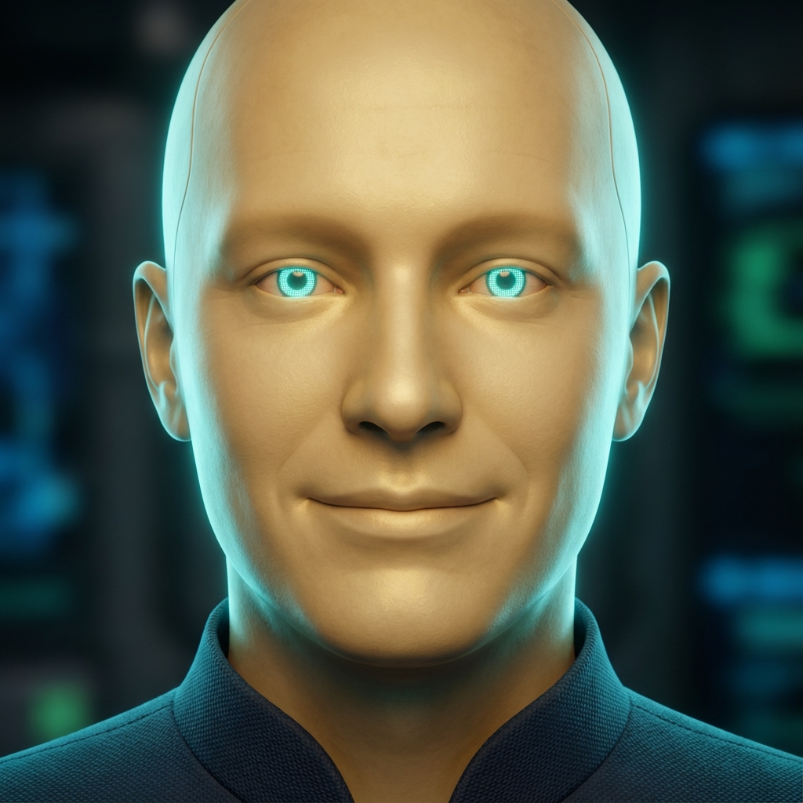

👐
< BACK
📖 MY STORY
NEXUS CORE
SYSTEM OPTIMAL • CONNECTED

>_ PROCESSING NEURAL STREAMS...
▋
● NEURAL LINK ACTIVE
ENCRYPTION: QUANTUM-256
[NEXUS]: Welcome, Adrian. I am online and listening.
[NEXUS]: Systems are functioning within normal parameters.
🎤
SEND
● REC